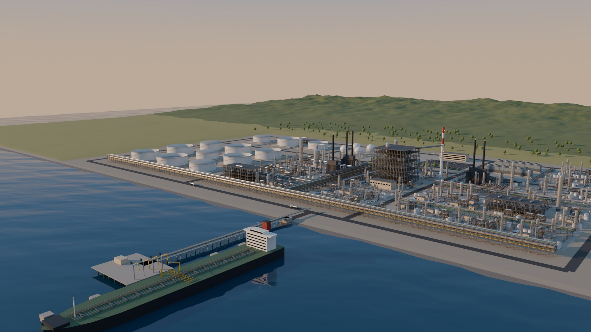
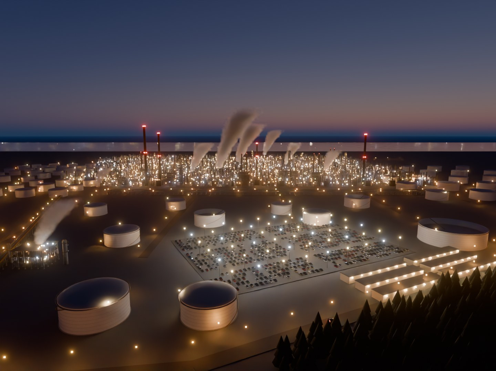
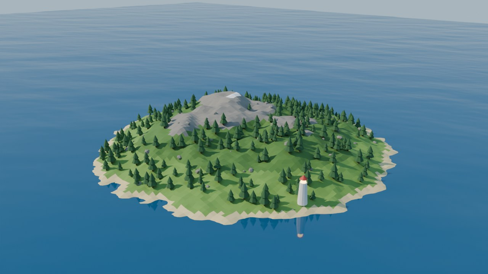
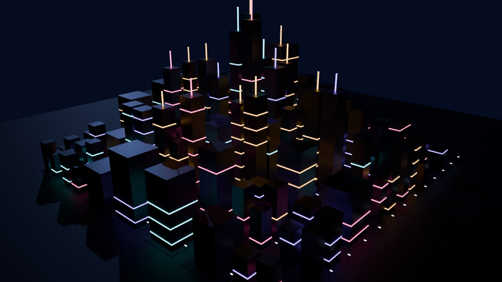

Using the Blender world harness
You describe a 3D world, or hand over a photo, and Claude builds it in headless Blender,
checks the renders, and publishes it to this app as an explorable scene. It runs in a Claude Code
cloud session, in Docker, or on your own machine.
What it is
Every world is one Python file, worlds/<name>/world.py, written against a small
world-building API. The build tool runs it in Blender and produces three things: a .glb for
the web, a preview render that Claude looks at to check its own work, and the world's settings
(camera, sun, sky, ocean, lamps). This app turns every built world into a gallery card and a live
3D scene.
1 · DescribeA prompt, or a reference photo
2 · CodeClaude writes world.py
3 · BuildHeadless Blender: model, render, export
4 · CheckClaude reads the renders and fixes problems
5 · PublishCommit; the world appears here
Because worlds are code, they're reproducible (the same seed gives the same world), reviewable in a pull
request, and easy to change ("add a second jetty", "make it winter at 08:30").
Getting started
Claude Code on the web recommended
- At claude.ai/code, create an environment for
worksona/blender-harness.
- Setup script: paste the cloud setup script below. Blender installs
once (about a minute). The environment is then cached, so sessions start with Blender ready.
- Network access: choose Custom and add
download.blender.org, keeping the
defaults. On the default Trusted network, Blender installs from PyPI instead.
- Start a session and ask for a world.
Docker
docker compose build: Ubuntu, Blender 5.2.2 and Claude Code.make docker-claude runs Claude Code inside the container. make docker-shell
gives you a plain shell.- Works on any cloud VM. The image is x86-64; on Apple Silicon it runs under emulation.
Your own machine
- Install Blender 5.2, or run
make setup.
- Run
make doctor to check Blender, rendering and export.
- Run
make serve, then open http://localhost:8000.
- Run
claude in the repo, or use the make commands yourself.
Cloud setup script
Paste all of this into the Setup script field of your environment at claude.ai/code. It installs
Blender once. The environment is saved as a snapshot and reused for every session, and the script re-runs
only if you edit it or the network settings, or after about 7 days. It's the same file as
scripts/cloud-env-setup.sh in the repo.
Loading the script… (if this doesn't load, open scripts/cloud-env-setup.sh in the repo)
Network: set access to Custom and add download.blender.org for the official
build. On the default Trusted network the script installs Blender's PyPI package instead.
A build session
Ask in plain language. A good request names the theme, the time of day, one landmark and the scale:
Make a foggy pine valley at 06:30 in autumn, with a timber sawmill by a river and a log truck
on the road. About 600 m across. High-ish 3/4 camera.
Claude then follows the build-world skill:
- Scaffold:
make new NAME="Pine Valley" creates worlds/pine-valley/world.py.
- Write the world in layers: ground and water, then landmarks, then repeated set dressing
(instanced), then time of day, then the camera.
- Build fast drafts:
scripts/bl tools/build_world.py pine-valley --top --samples 8 --res 640x360,
typically 5–60 s.
- Look: Claude reads the hero preview, the top-down layout view, and the photo comparison when
there's a reference. It fixes things that float or are buried, scale problems, empty areas and lighting,
usually over 2–4 rounds.
- Finish: a full-quality build, a check in this app, then a commit. CI rebuilds every world on push.
Then keep iterating in conversation: "the sawmill is too small", "show it at dusk",
"add steam from the kiln", "match this photo".
Use cases

Industrial sites and digital-twin style scenes
Plants, refineries, terminals and utilities, built from a library of process equipment: columns,
drums, steel frames, pipe racks, air coolers, storage tanks, LPG spheres, fired heaters, stacks,
cooling towers and flares. Process areas fill up with instanced modules, so a kilometre-wide site
stays light (the oil refinery is 1.8M triangles in a 3 MB download).
"Build a gas terminal: four LNG tanks, a jetty with two loading arms, a pipe rack to a
compressor station, at 14:00."
See: Coastal Oil Refinery · harness/industrial.py
Rebuild a real place from photos
Give Claude a photo. It estimates the camera from the horizon and known object sizes, places the
equipment by measurement, renders from the matching camera, and compares photo against render
each round. Expect a faithful recreation of layout and character, not a survey-grade model. More
angles, an aerial view, or known dimensions make it more accurate.
"Here's a photo of our compressor station. Build it, and make the yellow pipelines match."
See: Gas Processing Station, Refinery at Dusk · worlds/<name>/reference/

Lighting, time-of-day and night studies
One call, atmosphere(time, latitude, day, …), gives the real sun position, a physical
sky, haze, automatic exposure and lamps that switch on at dusk. In this app, the Light panel scrubs
through the day or plays it, and changes season, latitude, haze, visibility and exposure. That's
useful for shadow studies, night lighting, visibility, and "how does it look at 6 am in December".
"Render the site at 07:00, 12:00 and 21:30 in midwinter at 60°N."
See: Refinery at Dusk · --time · Light panel (L)
Coastal and marine scenes
An endless animated ocean (swell, foam, sun glitter, refraction, shoreline foam), with boats, buoys
and tankers that ride the waves. In the Blender render it becomes an FFT ocean, or flat water for
distant bays.
"A fishing harbour at dawn with a breakwater, a dozen boats bobbing and rough sea outside."
See: Golden Harbor · ocean(), bob()

Stylised and game-style environments
Terrain from noise with height-banded materials, scattered forests and rocks, landmarks, and
stylised night scenes with neon and bloom. A good fit for concept art, level blockouts, and the
backdrops of a multi-world app.
"A desert canyon with a mesa village, low-poly, golden hour."
See: Low-Poly Island, Neon City · terrain(), scatter()

Presenting and sharing
Every world gets a gallery card, an orbitable scene and a high-resolution preview render. Links keep
the lighting state (for example #/w/refinery-dusk?t=21.2), so you can send someone the
exact view. CI can publish the whole app to GitHub Pages. Renders can be produced at any time of day
for decks and reports.
"Give me 1920×1080 hero renders of every world at golden hour."
See: this app · META["render"] · GitHub Pages (opt-in)
Limits: what it isn't for
- Survey-grade or CAD-accurate models. Photo matching estimates dimensions, and routing it can't
see is invented. For exact geometry, give dimensions or plans; photogrammetry is a different tool chain.
- Textured, photoreal materials in the web app. Only flat-colour PBR materials (colour, roughness,
metal, emission, alpha) export to the web. Procedural textures show in Blender renders only.
- Animation beyond the built-in effects. Ocean waves, floating objects and steam animate. Moving
vehicles, machinery, characters and physics aren't supported yet.
- Interactive apps or games. The viewer is for exploring. Clickable objects and game logic would be
new viewer work.
- GPU rendering in the cloud. Cloud sessions have no GPU, so previews use Cycles on CPU. Plan for
about 5 s to 3 min per render. Very large or heavily lit scenes take longest.
- Budgets. Aim for about 300k triangles drawn per ordinary world, or up to about 2M if most of
it is instanced. Keep unique triangles under about 600k.
Reference: commands
| Command | What it does |
|---|
make setup / make doctor | Install headless Blender / check rendering and export |
make new NAME="Title" | Scaffold worlds/<slug>/world.py |
make world W=<slug> | Build one world, with a top-down layout view in build/<slug>/top.jpg |
make worlds | Build every world, skipping drafts |
make serve | This app at http://localhost:8000 |
scripts/bl tools/build_world.py <slug> [flags] | Build with flags:
--samples N --res 1280x720 --top --no-render
--blend (also save the .blend) --all |
… --time 21:30 [--haze 0.6] [--lamps on] [--ev 0.5] | Preview the world at another
time or in other conditions, written to build/<slug>/. The published world is left unchanged. |
Reference: writing a world
from harness import *
META = {"title": "Pine Cove", "description": "…", "tags": ["nature"], "seed": 3}
def height(x, y):
return island_falloff(x, y, 80) * 20 * (0.6 + 0.4 * fbm(x, y, scale=30))
def build(ctx): # use ctx.rng for every random choice
grass, rock = material("grass", "#6e9a45"), material("rock", "#8a8580")
terrain("Land", size=200, height=height, bands=[(10, grass), (99, rock)])
ocean(level=0, waves="moderate")
pine = prefab(join("Pine", [cylinder("trunk", 0.25, 1.6), cone("top", 1.6, 4, location=(0, 0, 1.2))]))
for i, (x, y, z) in enumerate(scatter(ctx.rng, 200, 80, height, lambda x, y, z: z > 1.5, min_dist=3)):
instance(pine, f"Pine.{i}", (x, y, z))
atmosphere(time="17:30", latitude=48, day=266, haze=0.3)
camera((140, -140, 70), (0, 0, 5))
| Area | Functions |
|---|
| Shapes | box sphere cylinder cone plane mesh · material(name, color, roughness, metallic, emission, alpha) |
| Repeats | join → prefab → instance. Copies are free in the download and the viewer draws them as one GPU batch. |
| Detailed parts | MeshBuilder: beam rod tube (bent pipes) pipe flange handwheel ladder(cage=True) railing ring_platform dome torus |
| Plant equipment | from harness import industrial as ind: vessel drum steel_frame pipe_rack air_coolers storage_tank lpg_sphere fired_heater stack cooling_tower flare kit_prefabs + fill |
| Land and water | terrain fbm island_falloff scatter slope · ocean bob |
| Light | atmosphere(time, latitude, day, north, haze, visibility, exposure, lamps) · lamp lamps_along · plume (steam) · manual sun sky fog |
| Camera | camera(location, target, lens): the hero preview and the viewer's starting view |
Conventions: Z is up, units are metres, and the ground is at z = 0. A bearing of 0° points to +Y (north)
and 90° to +X (east).
| Key | Meaning |
|---|
title description tags seed | The gallery card, plus the random seed for the world |
render | {"res": "1920x1080", "samples": 48, "look": "AgX - Punchy", "view": "Standard", "glare": 0.4}: preview render settings |
grade | {"gains": [0.7, 1, 1.05], "saturation": 1.4}: a colour grade, applied identically in the render and the viewer |
viewer | {"bloom": 0.5, "exposure": 1.2, "tone": "neutral", "grade": {…}}: viewer-only overrides |
export | {"draco": true|false}. By default, large worlds are compressed automatically. |
draft | True keeps a work-in-progress world out of --all and CI. |
Reference: viewer controls
| Key | Action |
|---|
| drag / scroll | Orbit / zoom |
| L | Light panel: time of day, season, latitude, haze, visibility, exposure, lamps |
| Space | Play through the day (with the Light panel open) |
| R · 0 | Auto-rotate · reset view |
| [ ] · Esc | Previous / next world · back to the gallery |
| URL parameter | Example |
|---|
| Time (hours) | t=21.25 |
| Latitude · day of year | lat=58.3 · day=172 |
| Haze · visibility (m) | haze=0.4 · vis=8000 |
| Exposure · lamps | ev=0.5 · lamps=on |
| Full link | #/w/refinery-dusk?t=21.2&haze=0.3 |
For the details behind each feature, read CLAUDE.md in the repo. Claude reads it at the start
of every session.